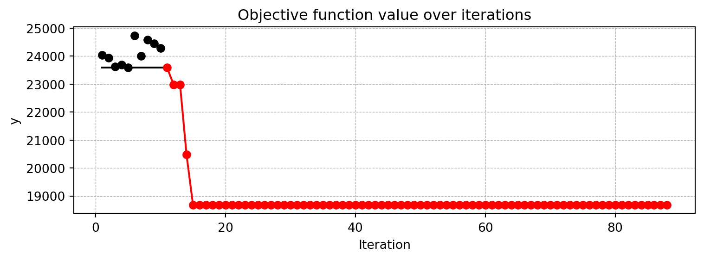
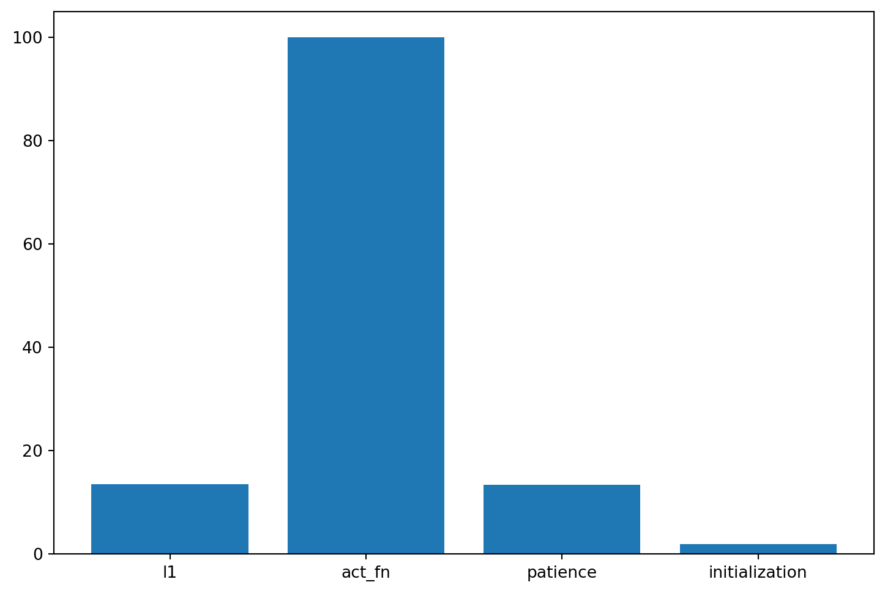
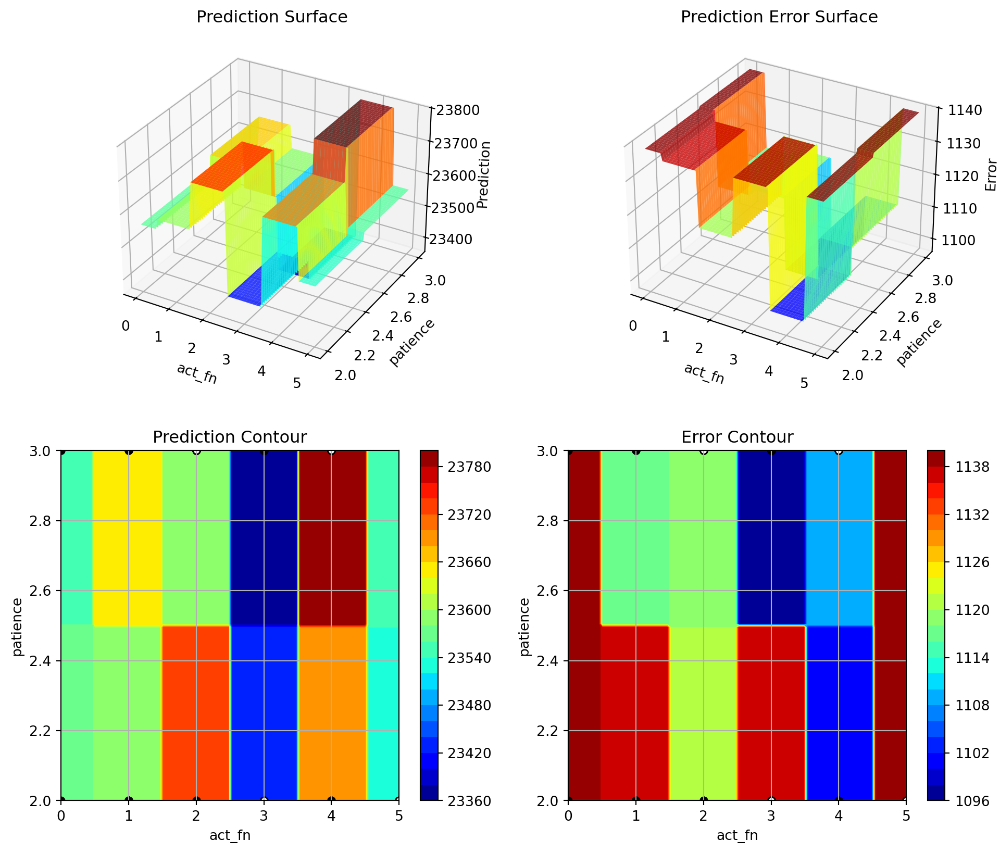
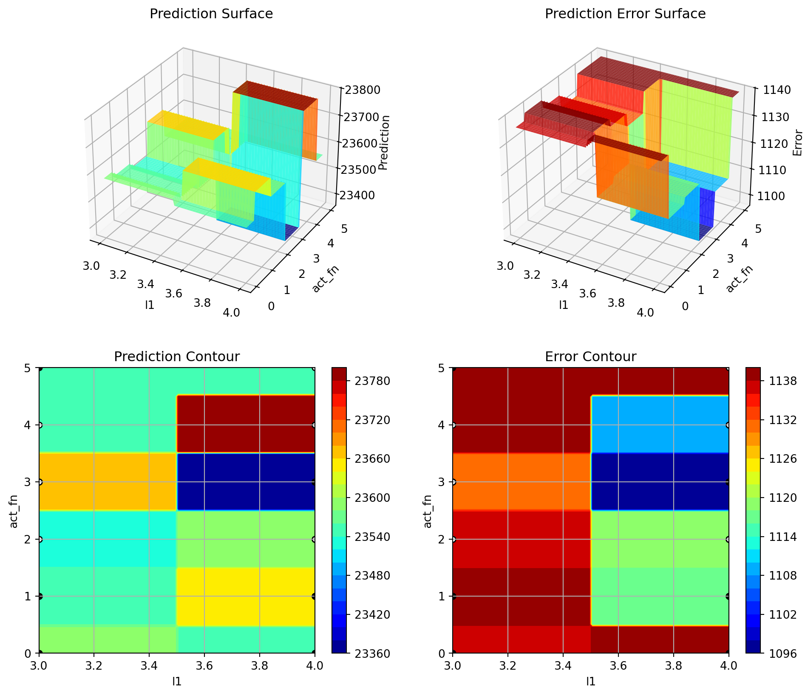
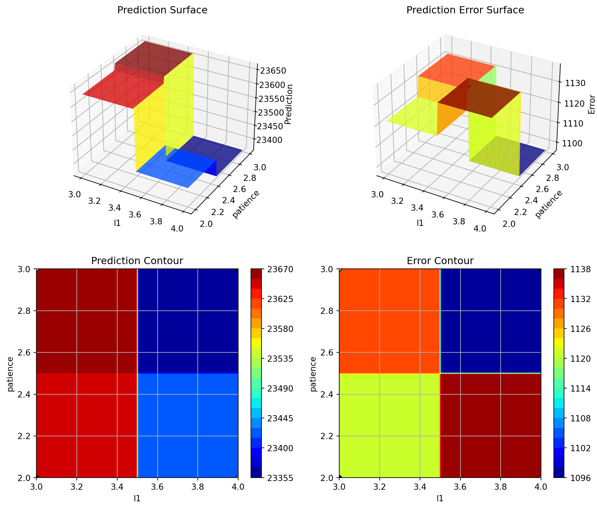

import sys
sys.path.insert(0, './userModel')
import my_resnet
import my_hyper_dict35 Hyperparameter Tuning with spotpython and PyTorch Lightning for the Diabetes Data Set Using a User Specified ResNet Model
After importing the necessary libraries, the fun_control dictionary is set up via the fun_control_init function. The fun_control dictionary contains
PREFIX: a unique identifier for the experimentfun_evals: the number of function evaluationsmax_time: the maximum run time in minutesdata_set: the data set. Here we use theDiabetesdata set that is provided byspotpython.core_model_name: the class name of the neural network model. This neural network model is provided byspotpython.hyperdict: the hyperparameter dictionary. This dictionary is used to define the hyperparameters of the neural network model. It is also provided byspotpython._L_in: the number of input features. Since theDiabetesdata set has 10 features,_L_inis set to 10._L_out: the number of output features. Since we want to predict a single value,_L_outis set to 1.
The HyperLight class is used to define the objective function fun. It connects the PyTorch and the spotpython methods and is provided by spotpython.
To access the user specified ResNet model, the path to the user model must be added to the Python path:
In the following code, we do not specify the ResNet model in the fun_control dictionary. It will be added in a second step as the user specified model.
from spotpython.data.diabetes import Diabetes
from spotpython.hyperdict.light_hyper_dict import LightHyperDict
from spotpython.fun.hyperlight import HyperLight
from spotpython.utils.init import (fun_control_init, surrogate_control_init, design_control_init)
from spotpython.utils.eda import gen_design_table
from spotpython.spot import spot
from spotpython.utils.file import get_experiment_filename
PREFIX="606-user-resnet"
data_set = Diabetes()
fun_control = fun_control_init(
PREFIX=PREFIX,
fun_evals=inf,
max_time=1,
data_set = data_set,
_L_in=10,
_L_out=1)
fun = HyperLight().funIn a second step, we can add the user specified ResNet model to the fun_control dictionary:
from spotpython.hyperparameters.values import add_core_model_to_fun_control
add_core_model_to_fun_control(fun_control=fun_control,
core_model=my_resnet.MyResNet,
hyper_dict=my_hyper_dict.MyHyperDict)The method set_hyperparameter allows the user to modify default hyperparameter settings. Here we modify some hyperparameters to keep the model small and to decrease the tuning time.
from spotpython.hyperparameters.values import set_hyperparameter
set_hyperparameter(fun_control, "optimizer", [ "Adadelta", "Adam", "Adamax"])
set_hyperparameter(fun_control, "l1", [3,4])
set_hyperparameter(fun_control, "epochs", [3,7])
set_hyperparameter(fun_control, "batch_size", [4,11])
set_hyperparameter(fun_control, "dropout_prob", [0.0, 0.025])
set_hyperparameter(fun_control, "patience", [2,3])
set_hyperparameter(fun_control, "lr_mult", [0.1, 20.0])
design_control = design_control_init(init_size=10)
print(gen_design_table(fun_control))| name | type | default | lower | upper | transform |
|----------------|--------|-----------|---------|---------|-----------------------|
| l1 | int | 3 | 3 | 4 | transform_power_2_int |
| epochs | int | 4 | 3 | 7 | transform_power_2_int |
| batch_size | int | 4 | 4 | 11 | transform_power_2_int |
| act_fn | factor | ReLU | 0 | 5 | None |
| optimizer | factor | SGD | 0 | 2 | None |
| dropout_prob | float | 0.01 | 0 | 0.025 | None |
| lr_mult | float | 1.0 | 0.1 | 20 | None |
| patience | int | 2 | 2 | 3 | transform_power_2_int |
| initialization | factor | Default | 0 | 4 | None |Finally, a Spot object is created. Calling the method run() starts the hyperparameter tuning process.
spot_tuner = spot.Spot(fun=fun,fun_control=fun_control, design_control=design_control)
res = spot_tuner.run()Milestones: [16, 32, 48]train_model result: {'val_loss': 23430.251953125, 'hp_metric': 23430.251953125}
Milestones: [2, 4, 6]train_model result: {'val_loss': 23832.76171875, 'hp_metric': 23832.76171875}
Milestones: [16, 32, 48]train_model result: {'val_loss': 24174.52734375, 'hp_metric': 24174.52734375}
Milestones: [2, 4, 6]train_model result: {'val_loss': 23714.984375, 'hp_metric': 23714.984375}
Milestones: [32, 64, 96]train_model result: {'val_loss': 23998.998046875, 'hp_metric': 23998.998046875}
Milestones: [32, 64, 96]train_model result: {'val_loss': 4521.89404296875, 'hp_metric': 4521.89404296875}
Milestones: [4, 8, 12]train_model result: {'val_loss': 24035.34375, 'hp_metric': 24035.34375}
Milestones: [4, 8, 12]train_model result: {'val_loss': 23314.099609375, 'hp_metric': 23314.099609375}
Milestones: [8, 16, 24]train_model result: {'val_loss': 22047.951171875, 'hp_metric': 22047.951171875}
Milestones: [8, 16, 24]train_model result: {'val_loss': 23273.93359375, 'hp_metric': 23273.93359375}Milestones: [32, 64, 96]
train_model result: {'val_loss': 9563.8974609375, 'hp_metric': 9563.8974609375}
spotpython tuning: 4521.89404296875 [#---------] 6.00% Milestones: [32, 64, 96]
train_model result: {'val_loss': 7381.14501953125, 'hp_metric': 7381.14501953125}
spotpython tuning: 4521.89404296875 [#---------] 12.26% Milestones: [4, 8, 12]
train_model result: {'val_loss': 23363.349609375, 'hp_metric': 23363.349609375}
spotpython tuning: 4521.89404296875 [#---------] 14.40% Milestones: [32, 64, 96]
train_model result: {'val_loss': 23838.75, 'hp_metric': 23838.75}
spotpython tuning: 4521.89404296875 [##--------] 16.66% Milestones: [32, 64, 96]train_model result: {'val_loss': 23894.296875, 'hp_metric': 23894.296875}
spotpython tuning: 4521.89404296875 [###-------] 34.54% Milestones: [32, 64, 96]
train_model result: {'val_loss': 3983.214599609375, 'hp_metric': 3983.214599609375}
spotpython tuning: 3983.214599609375 [####------] 41.14% Milestones: [32, 64, 96]
train_model result: {'val_loss': 4832.064453125, 'hp_metric': 4832.064453125}
spotpython tuning: 3983.214599609375 [#####-----] 47.80% Milestones: [32, 64, 96]train_model result: {'val_loss': 8285.69921875, 'hp_metric': 8285.69921875}
spotpython tuning: 3983.214599609375 [#######---] 69.31% Milestones: [4, 8, 12]train_model result: {'val_loss': 23632.052734375, 'hp_metric': 23632.052734375}
spotpython tuning: 3983.214599609375 [########--] 75.04% Milestones: [32, 64, 96]
train_model result: {'val_loss': 4522.251953125, 'hp_metric': 4522.251953125}
spotpython tuning: 3983.214599609375 [########--] 84.89% Milestones: [32, 64, 96]train_model result: {'val_loss': 14587.1298828125, 'hp_metric': 14587.1298828125}
spotpython tuning: 3983.214599609375 [##########] 100.00% Done...
35.1 Looking at the Results
35.1.1 Tuning Progress
After the hyperparameter tuning run is finished, the progress of the hyperparameter tuning can be visualized with spotpython’s method plot_progress. The black points represent the performace values (score or metric) of hyperparameter configurations from the initial design, whereas the red points represents the hyperparameter configurations found by the surrogate model based optimization.
spot_tuner.plot_progress()
35.1.2 Tuned Hyperparameters and Their Importance
Results can be printed in tabular form.
from spotpython.utils.eda import gen_design_table
print(gen_design_table(fun_control=fun_control, spot=spot_tuner))| name | type | default | lower | upper | tuned | transform | importance | stars |
|----------------|--------|-----------|---------|---------|---------------------|-----------------------|--------------|---------|
| l1 | int | 3 | 3.0 | 4.0 | 3.0 | transform_power_2_int | 0.00 | |
| epochs | int | 4 | 3.0 | 7.0 | 7.0 | transform_power_2_int | 11.63 | * |
| batch_size | int | 4 | 4.0 | 11.0 | 11.0 | transform_power_2_int | 0.00 | |
| act_fn | factor | ReLU | 0.0 | 5.0 | ReLU | None | 0.00 | |
| optimizer | factor | SGD | 0.0 | 2.0 | Adadelta | None | 0.00 | |
| dropout_prob | float | 0.01 | 0.0 | 0.025 | 0.01565972071452102 | None | 100.00 | *** |
| lr_mult | float | 1.0 | 0.1 | 20.0 | 17.481358411838603 | None | 100.00 | *** |
| patience | int | 2 | 2.0 | 3.0 | 3.0 | transform_power_2_int | 26.31 | * |
| initialization | factor | Default | 0.0 | 4.0 | kaiming_uniform | None | 0.01 | |A histogram can be used to visualize the most important hyperparameters.
spot_tuner.plot_importance(threshold=1.0)
spot_tuner.plot_important_hyperparameter_contour(max_imp=3)l1: 0.001
epochs: 11.627910987386626
batch_size: 0.001
act_fn: 0.001
optimizer: 0.001
dropout_prob: 100.0
lr_mult: 100.0
patience: 26.31348984532779
initialization: 0.00842478951799848
impo: [['l1', 0.001], ['epochs', 11.627910987386626], ['batch_size', 0.001], ['act_fn', 0.001], ['optimizer', 0.001], ['dropout_prob', 100.0], ['lr_mult', 100.0], ['patience', 26.31348984532779], ['initialization', 0.00842478951799848]]
indices: [5, 6, 7, 1, 8, 0, 2, 3, 4]
indices after max_imp selection: [5, 6, 7]


35.1.3 Get the Tuned Architecture
import pprint
from spotpython.hyperparameters.values import get_tuned_architecture
config = get_tuned_architecture(spot_tuner, fun_control)
pprint.pprint(config){'act_fn': ReLU(),
'batch_size': 2048,
'dropout_prob': 0.01565972071452102,
'epochs': 128,
'initialization': 'kaiming_uniform',
'l1': 8,
'lr_mult': 17.481358411838603,
'optimizer': 'Adadelta',
'patience': 8}35.2 Details of the User-Specified ResNet Model
The specification of a user model requires three files:
my_resnet.py: the Python file containing the user specified ResNet modelmy_hyperdict.py: the Python file for loading the hyperparameter dictionarymy_hyperdict.jsonfor the user specified ResNet modelmy_hyperdict.json: the JSON file containing the hyperparameter dictionary for the user specified ResNet model
35.2.1 my_resnet.py
import lightning as L
import torch
from torch import nn
from spotpython.hyperparameters.optimizer import optimizer_handler
import torchmetrics.functional.regression
import torch.optim as optim
class ResidualBlock(nn.Module):
def __init__(self, input_dim, output_dim, act_fn, dropout_prob):
super(ResidualBlock, self).__init__()
self.fc1 = nn.Linear(input_dim, output_dim)
self.bn1 = nn.BatchNorm1d(output_dim)
self.ln1 = nn.LayerNorm(output_dim)
self.fc2 = nn.Linear(output_dim, output_dim)
self.bn2 = nn.BatchNorm1d(output_dim)
self.ln2 = nn.LayerNorm(output_dim)
self.act_fn = act_fn
self.dropout = nn.Dropout(dropout_prob)
self.shortcut = nn.Sequential()
if input_dim != output_dim:
self.shortcut = nn.Sequential(
nn.Linear(input_dim, output_dim),
nn.BatchNorm1d(output_dim)
)
def forward(self, x):
identity = self.shortcut(x)
out = self.fc1(x)
out = self.bn1(out)
out = self.ln1(out)
out = self.act_fn(out)
out = self.dropout(out)
out = self.fc2(out)
out = self.bn2(out)
out = self.ln2(out)
out += identity # Residual connection
out = self.act_fn(out)
return out
class MyResNet(L.LightningModule):
def __init__(
self,
l1: int,
epochs: int,
batch_size: int,
initialization: str,
act_fn: nn.Module,
optimizer: str,
dropout_prob: float,
lr_mult: float,
patience: int,
_L_in: int,
_L_out: int,
_torchmetric: str,
):
super().__init__()
self._L_in = _L_in
self._L_out = _L_out
if _torchmetric is None:
_torchmetric = "mean_squared_error"
self._torchmetric = _torchmetric
self.metric = getattr(torchmetrics.functional.regression, _torchmetric)
self.save_hyperparameters(ignore=["_L_in", "_L_out", "_torchmetric"])
self.example_input_array = torch.zeros((batch_size, self._L_in))
if self.hparams.l1 < 4:
raise ValueError("l1 must be at least 4")
# Get hidden sizes
hidden_sizes = self._get_hidden_sizes()
layer_sizes = [self._L_in] + hidden_sizes
# Construct the layers with Residual Blocks and Linear Layer at the end
layers = []
for i in range(len(layer_sizes) - 1):
layers.append(
ResidualBlock(
layer_sizes[i],
layer_sizes[i + 1],
self.hparams.act_fn,
self.hparams.dropout_prob
)
)
layers.append(nn.Linear(layer_sizes[-1], self._L_out))
self.layers = nn.Sequential(*layers)
# Initialization (Xavier, Kaiming, or Default)
self.apply(self._init_weights)
def _init_weights(self, module):
if isinstance(module, nn.Linear):
if self.hparams.initialization == "xavier_uniform":
nn.init.xavier_uniform_(module.weight)
elif self.hparams.initialization == "xavier_normal":
nn.init.xavier_normal_(module.weight)
elif self.hparams.initialization == "kaiming_uniform":
nn.init.kaiming_uniform_(module.weight)
elif self.hparams.initialization == "kaiming_normal":
nn.init.kaiming_normal_(module.weight)
else: # "Default"
nn.init.uniform_(module.weight)
if module.bias is not None:
nn.init.zeros_(module.bias)
def _generate_div2_list(self, n, n_min) -> list:
result = []
current = n
repeats = 1
max_repeats = 4
while current >= n_min:
result.extend([current] * min(repeats, max_repeats))
current = current // 2
repeats = repeats + 1
return result
def _get_hidden_sizes(self):
n_low = max(2, int(self._L_in / 4)) # Ensure minimum reasonable size
n_high = max(self.hparams.l1, 2 * n_low)
hidden_sizes = self._generate_div2_list(n_high, n_low)
return hidden_sizes
def forward(self, x: torch.Tensor) -> torch.Tensor:
x = self.layers(x)
return x
def _calculate_loss(self, batch):
x, y = batch
y = y.view(len(y), 1)
y_hat = self(x)
loss = self.metric(y_hat, y)
return loss
def training_step(self, batch: tuple) -> torch.Tensor:
val_loss = self._calculate_loss(batch)
return val_loss
def validation_step(self, batch: tuple, batch_idx: int, prog_bar: bool = False) -> torch.Tensor:
val_loss = self._calculate_loss(batch)
self.log("val_loss", val_loss, prog_bar=prog_bar)
self.log("hp_metric", val_loss, prog_bar=prog_bar)
return val_loss
def test_step(self, batch: tuple, batch_idx: int, prog_bar: bool = False) -> torch.Tensor:
val_loss = self._calculate_loss(batch)
self.log("val_loss", val_loss, prog_bar=prog_bar)
self.log("hp_metric", val_loss, prog_bar=prog_bar)
return val_loss
def predict_step(self, batch: tuple, batch_idx: int, prog_bar: bool = False) -> torch.Tensor:
x, y = batch
yhat = self(x)
y = y.view(len(y), 1)
yhat = yhat.view(len(yhat), 1)
return (x, y, yhat)
def configure_optimizers(self):
optimizer = optimizer_handler(
optimizer_name=self.hparams.optimizer,
params=self.parameters(),
lr_mult=self.hparams.lr_mult
)
# Dynamic creation of milestones based on the number of epochs.
num_milestones = 3 # Number of milestones to divide the epochs
milestones = [int(self.hparams.epochs / (num_milestones + 1) * (i + 1)) for i in range(num_milestones)]
# Print milestones for debug purposes
print(f"Milestones: {milestones}")
# Create MultiStepLR scheduler with dynamic milestones and learning rate multiplier.
scheduler = optim.lr_scheduler.MultiStepLR(
optimizer,
milestones=milestones,
gamma=0.1 # Decay factor
)
# Learning rate scheduler configuration
lr_scheduler_config = {
"scheduler": scheduler,
"interval": "epoch", # Adjust learning rate per epoch
"frequency": 1, # Apply the scheduler at every epoch
}
return {"optimizer": optimizer, "lr_scheduler": lr_scheduler_config}35.2.2 my_hyperdict.py
import json
from spotpython.data import base
import pathlib
class MyHyperDict(base.FileConfig):
"""User specified hyperparameter dictionary.
This class extends the FileConfig class to provide a dictionary for storing hyperparameters.
Attributes:
filename (str):
The name of the file where the hyperparameters are stored.
"""
def __init__(
self,
filename: str = "my_hyper_dict.json",
directory: None = None,
) -> None:
super().__init__(filename=filename, directory=directory)
self.filename = filename
self.directory = directory
self.hyper_dict = self.load()
@property
def path(self):
if self.directory:
return pathlib.Path(self.directory).joinpath(self.filename)
return pathlib.Path(__file__).parent.joinpath(self.filename)
def load(self) -> dict:
"""Load the hyperparameters from the file.
Returns:
dict: A dictionary containing the hyperparameters.
Examples:
# Assume the user specified file `my_hyper_dict.json` is in the `./hyperdict/` directory.
>>> user_lhd = MyHyperDict(filename='my_hyper_dict.json', directory='./hyperdict/')
"""
with open(self.path, "r") as f:
d = json.load(f)
return d35.2.3 my_hyperdict.json
"MyResNet": {
"l1": {
"type": "int",
"default": 3,
"transform": "transform_power_2_int",
"lower": 3,
"upper": 10
},
"epochs": {
"type": "int",
"default": 4,
"transform": "transform_power_2_int",
"lower": 4,
"upper": 9
},
"batch_size": {
"type": "int",
"default": 4,
"transform": "transform_power_2_int",
"lower": 1,
"upper": 6
},
"act_fn": {
"levels": [
"Sigmoid",
"Tanh",
"ReLU",
"LeakyReLU",
"ELU",
"Swish"
],
"type": "factor",
"default": "ReLU",
"transform": "None",
"class_name": "spotpython.torch.activation",
"core_model_parameter_type": "instance()",
"lower": 0,
"upper": 5
},
"optimizer": {
"levels": [
"Adadelta",
"Adagrad",
"Adam",
"AdamW",
"SparseAdam",
"Adamax",
"ASGD",
"NAdam",
"RAdam",
"RMSprop",
"Rprop",
"SGD"
],
"type": "factor",
"default": "SGD",
"transform": "None",
"class_name": "torch.optim",
"core_model_parameter_type": "str",
"lower": 0,
"upper": 11
},
"dropout_prob": {
"type": "float",
"default": 0.01,
"transform": "None",
"lower": 0.0,
"upper": 0.25
},
"lr_mult": {
"type": "float",
"default": 1.0,
"transform": "None",
"lower": 0.1,
"upper": 10.0
},
"patience": {
"type": "int",
"default": 2,
"transform": "transform_power_2_int",
"lower": 2,
"upper": 6
},
"initialization": {
"levels": [
"Default",
"kaiming_uniform",
"kaiming_normal",
"xavier_uniform",
"xavier_normal"
],
"type": "factor",
"default": "Default",
"transform": "None",
"core_model_parameter_type": "str",
"lower": 0,
"upper": 4
}
}35.3 Summary
This section presented an introduction to the basic setup of hyperparameter tuning with spotpython and PyTorch Lightning using a ResNet model for the Diabetes data set.